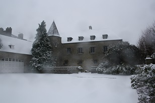
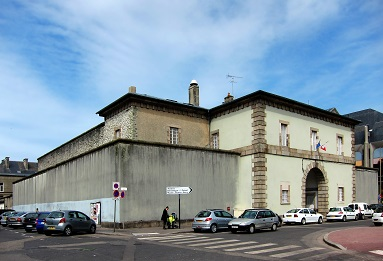
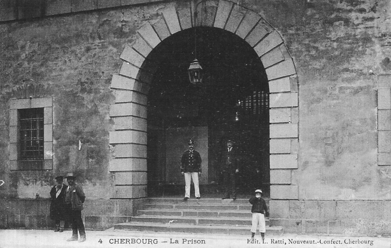
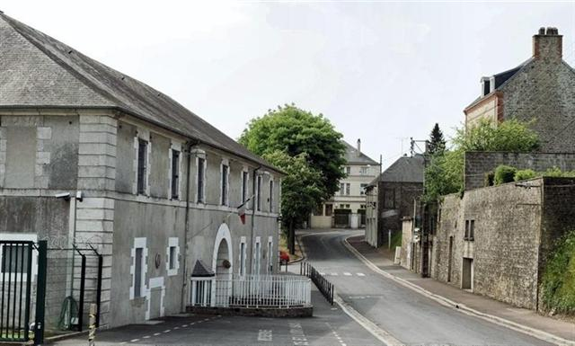
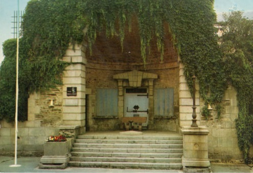
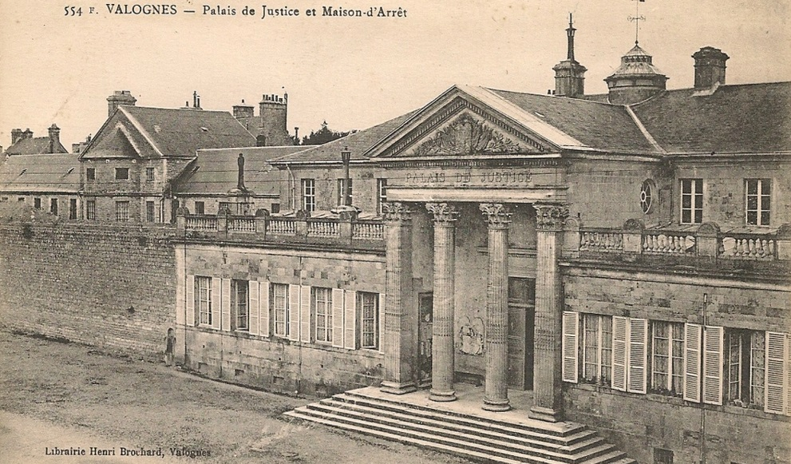

| Département | Images | Ville | Nom | Adresse | Période | Capacité | Histoire du lieu | Nombre d'exécutions |
| Manche (50) |  |
Avranches | Maison d'arrêt et de correction | Place Jean-de-Saint-Avit | 1792-1926 | Ancien palais épiscopal, devenu en 1963 musée municipal. | Aucune exécution | |
| Manche (50) |   |
Cherbourg-Octeville | Maison d'arrêt et de correction | 2, rue Vastel | En service depuis 1862 | 42 places, 11 surveillants (1962) 46 places (2015) |
Aucune exécution | |
| Manche (50) |  |
Coutances | Maison d'arrêt, de justice et de correction | 3, rue de la Verjusière | En service depuis 1828 | 60 places, 13 surveillants (1962) 48 places (2015) |
Réduite aux 2/3 de sa capacité depuis le bombardement de l'aile Nord en juin 1944. | Six exécutions en 1912, 1933, 1936, 1940 et 1948. |
| Manche (50) | Mortain | Maison d'arrêt et de correction | Rue Géricault | 1840-1926 | Derrière la mairie, à côté de l'ancien tribunal. Rasée. A la place : salle de cinéma "Le Géricault" et la médiathèque Victor Gastebois. | Aucune exécution. | ||
| Manche (50) |  |
Saint-Lô | Maison d'arrêt et de correction | Place du Général-de-Gaulle | 1824-1944 | Presque entièrement détruite lors d'un bombardement, dans la nuit du 06 au 07 juin 1944. Seul le portail d'entrée survécut et fut conservé en l'état, devenu monument départemental de la Résistance. | Aucune exécution | |
| Manche (50) |  |
Valognes | Maison d'arrêt et de correction | Place du Général de Gaulle | 1834-1934 | Emplacement de l'ancien Hôpital Général. Aile ouest du palais de justice. Démolie en 1944. | Aucune exécution |
{kind=link}
{kind=link}
{kind=link}
{kind=link}
{kind=link}
{kind=link}
{kind=link}